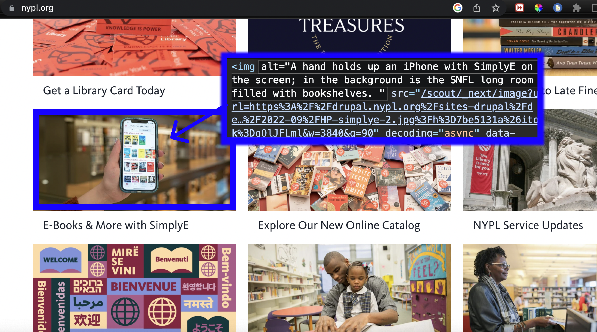

On websites, alt text is an important part of HTML code that allows us to describe images for things like vision-impaired visitors or as a replacement when image files don't load.
Excerpt from Alt Text As Poetry:What is alt text
Alt text (or alternative text) is a written description of an image posted online. Alt text can also be added to images embedded in digital documents (PDFs, Word documents, Google docs, presentations, etc). .... Alt text allows visual content to be accessible to people who are blind, have low vision, or have certain cognitive disabilities. Blind people often use software called screen readers to access digital displays. The screen reader outputs the text on the screen to a synthetic voice or refreshable braille display. On a website, a screen reader might readout options in the navigation bar, followed by the title, the first paragraph, the second paragraph, etc. When a screen reader encounters an image, it’s unable to “read” it. So instead, it looks for the alt text — an associated description of the image, embedded in the code. This is how alt text functions as a non-visual alternative to an image.
Real examples of alt text within common crawl data:
<img decoding="async" src="https://abbcfp.com/wp-content/uploads/elementor/thumbs/man-is-reaching-his-hand-push-fire-alarm-hand-station-scaled-r6zb5mabxq8uctoqbhnfgq09xu0s9akss4ihk49g2c.jpg" title="Man is reaching his hand to push fire alarm hand station" alt="Man is reaching his hand to push fire alarm hand station" loading="lazy">
<img src="products/big/122403/2015-Luxury-Purple-Dresses-for-Quince-with-Appliques-and-Ruffles-130.jpg" title="triumph" style="border: 2px solid rgb(102, 102, 102); width: 345px; opacity: 1;" alt="2015 Luxury Purple Dresses for Quince with Appliques and Ruffles">
<img fetchpriority="high" decoding="async" width="300" height="600" src="https://aaronarmstrong.co/wp-content/uploads/2025/05/Available-Now.webp" alt="Faith Simplified: Available Now" class="wp-image-45370">
Let's surf the web and examine Alt-text 'in the wild.' In most browsers, on any website, you can right click on an image and select 'inspect' to view its HTML code.
Take a few minutes with a partner to try this out on different websites and be ready to share 2 examples of alt text in the wild and in your opinion, what is helpful and/or unhelpful about how it's written.
What do you think about the fact that these captions are written for screen readers but then used in a dataset used to train text-to-image models?